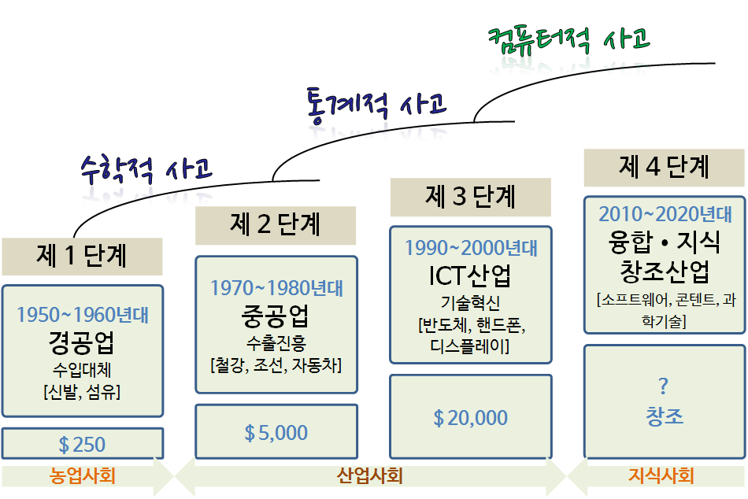
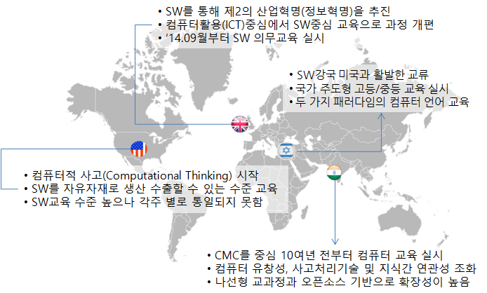

데이터 과학을 위한 저작도구
컴퓨터 사고력과 소프트웨어 교육
2010년 들어 가장 부각되고 있는 교육 중 하나가 소프트웨어 교육이다. SXSW 2010년 행사에서 이미 Douglas Rushkoff는 프로그래밍 하느냐 프로그래밍 되느냐(Program or be Programmed)하는 세상으로 변해왔고 앞으로 그렇게 될 것이라고 확신에 찬 주장을 했다. 컴퓨터를 이해하지 않고 현재와 미래를 살아가는 것은 마치 산업화 시대에 글과 숫자를 이해하지 못하고 산업화시대를 살아간 것에 비견될 수 있다.
우리나라에서 정부차원에서 ’13년 창조경제의 개념과 성공조건에서 김광두 국가미래연구원장이 농업사회에서 산업사회를 넘어가고 산업사회에서 지식사회를 넘어가고 있으며 지금은 융합, 지식 창조산업이 중추 산업이 되며, 소프트웨어, 콘텐츠, 과학기술이 핵심 기반이 되며 창조경제를 견인할 것으로 전망했다. 하지만, 국내 및 해외에서 모두 동의하는 미래에 우리자신이 얼마나 준비되어 있는지는 한번 되돌아볼 필요가 있다.
카네기멜론 대학 쟈넷 윙(Wing) 교수가 이론적 사고(Theoretical Thinking), 실험적 사고(Experimental Thinking)와 더불어 컴퓨터적 사고(Computational Thinking)가 향후 인간의 사고 체제를 지배하는 중추적인 역할을 할 것이라고 주장했다. 산업혁명이 일어난 이후 산업, 즉 공장에서 필요한 인력을 육성하고 공급하기 위해서 수학과 공학을 초중등 과정에서 집중적으로 교육하였으며 이러한 전통이 지금까지 이어져 국내 및 전세계 누구나 이론적 사고체계는 익숙하고 친숙하다. 공장 컨베이어 벨트 시스템을 통해서 생산되는 제품을 생각하면 왜 이론적 사고체계가 훌륭한 밑바탕이 되는지 어렵지 않게 이해할 수 있다.
통계가 근간을 이루는 실험적 사고는 스몰 데이터(Small Data)를 일부 초중등 과정에서 접목하고 있지만, 학교를 졸업하고 현실에서 많이 접하게 되고 필수적인 것임에도 통계에 대한 충분한 교육 및 훈련을 받지 못하고 사회에 진출하고 있는 것도 사실이다. 이러는 와중에 빅데이터(Big Data)가 10년도 되지 않는 짧은 시간에 성급 우리곁에 다가왔다. 그리고, 매일 사용하는 컴퓨터가 회사 컴퓨터로, 가정용 컴퓨터로, 그리고 개인 호주머니 속으로 들어오면서 추상화(Abstraction)와 자동화(Automation)가 근간을 이루는 컴퓨터적 사고도 절실히 요구되고 있다.

컴퓨터적 사고 체계가 갖는 산업적인 영향력과 범위가 매우 커서, 미국, 영국, 이스라엘, 일본을 포함한 선진국 뿐만 아니라 중국, 인도, 에스토니아 등 많은 나라들이 컴퓨터적 사고 체계를 갖춘 인력 확보가 미래 국가 경쟁력과 밀접한 연관이 있다고 내다보고 집중적으로 인력양성에 나서고 있다. 거시적인 측면 뿐만 아니라, 개인적인 측면에서도 컴퓨터적 사고와 통계적 사고를 갖춘 사람과 그렇지 못한 사람과의 차이는 산업경제 체제에서 빈부격차보다 더 큰 정보 불평등(Digital Divide)을 디지털 경제 시대에 야기할 것으로 예측되고 있으며, 변화된 환경에 준비되고 잘 적응한 사람은 과거보다 훨씬 더 큰 혜택과 권한을 갖을 것이다.

주로 선진국을 중심으로 소프트웨어 교육이 K-12 교육과정에서 집중적으로 확대되고 있음을 알 수 있다. 초중등생이 흔히 즐기는 게임도 오락실 아케이드 게임, 가정용 컴퓨터게임, 인터넷 게임, 모바일 게임으로 진화했고, 이제는 드론 경주, RC카 경주 처럼 현실세계와 컴퓨터 하드웨어와 이를 제어하는 소프트웨어가 네트워크로 긴밀히 연결된 세상이 왔다. 산업적으로는 전자상거래 강자인 아마존이 아마존(Amazon Kiva), 아마존 택배(Amazon Prime Air) 등 오랜동안 준비한 소프트웨어로 제어되는 컴퓨터를 시장에 내놓고 경쟁력을 높여가고 있다. 운송분야에서 구글 무인자동차(Google Self-Driving Car), 우버(Uber) 택시, 카카오 택시 등을 통해 우리의 일상을 바꿔가고 있다. 호텔 산업도 호텔을 하나도 갖고 있지 않은 에어비앤비(AirBnB)가 유수한 전통 호텔 산업을 위협하고 있으며, 로봇과 일자리 경쟁도 치열해지고 있으며, 미국 직업의 절반 이상이 컴퓨터의 위협을 받고 있다는 연구보고도 있다.
지금 초중등 과정을 다니는 학생뿐만 아니라 대학/대학원생도 누구나 컴퓨팅 사고력과 함께 통계적 사고를 함양해야 하고, 학교를 졸업한 사람도 이제는 평생교육의 일환으로 컴퓨팅 사고력와 통계적 사고를 다시 갖출 수 있도록 준비를 해야 한다. 중앙일보 사설에서 교사도 없이 소프트웨어 가르치겠다는 정신 나간 정부 라는 일부 자극적으로 볼 수 있는 기사가 나갔으나 현재 우리나라의 현실의 단면을 보여주고 있다. 은행지점 대부분 5년 안에 사라지고, ‘위기의 서막’..30대 그룹 절반 사라질 것이라는 기사가 넘쳐나고 있다. 모두 컴퓨팅 사고력, 컴퓨터, 소프트웨어와 긴밀히 연관되어 있다. 입시 및 취업에 너무나 많은 귀중한 시간을 우리가 보내고 있다고 돌아볼 필요가 있다. 하지만, 정보 불평등을 줄여 디지털 경제 공정한 기회가 누구에게나 주어지고, 설사 학교를 졸업한 사람도 재교육과 평생교육을 받아 다시 시작하는데 도움될 수 있도록 세계최고 수준의 품질을 갖춘 교육과정이 국내 및 해외에 무료로 다양한 방식으로 제공되고 있으니, 열정과 관심을 가지면 위기를 기회로 바꿔나갈 수 있을 것이다.